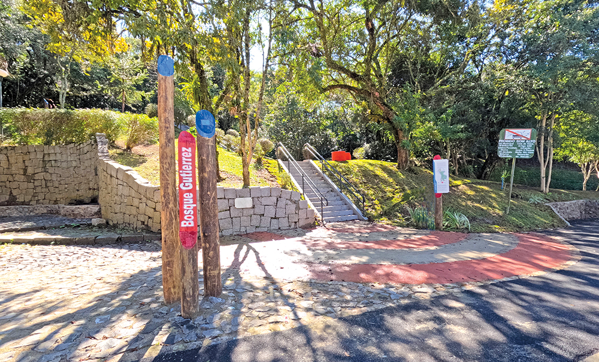
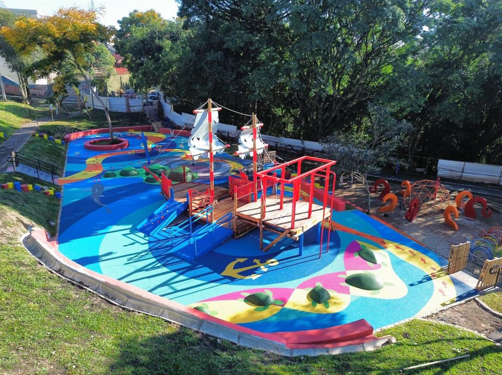

O Bosque Gutierrez, localizado no bairro Vista Alegre em Curitiba, é uma área de preservação verde que une a rica biodiversidade local a um resgate histórico da cidade. O espaço abriga uma vegetação nativa preservada e trilhas dedicadas ao contato com a natureza, além de homenagear a memória da família Gutierrez e do seringueiro e ativista Chico Mendes.

Um dos principais atrativos do parque é o Memorial Chico Mendes, instalado em uma antiga edificação revitalizada para honrar a luta do ambientalista brasileiro. Ao redor do espaço, encontra-se a Trilha dos Sentidos, um percurso projetado para proporcionar aos visitantes uma experiência sensorial única através das aromas, texturas e sons da flora local.

Outro ponto marcante do bosque é a presença de uma fonte natural de água mineral, conhecida historicamente por sua qualidade e pureza. A formação geológica do terreno favorece o surgimento de minas d'água na região, tornando o local um ponto de referência para moradores que buscam uma conexão direta com os recursos hídricos da cidade.